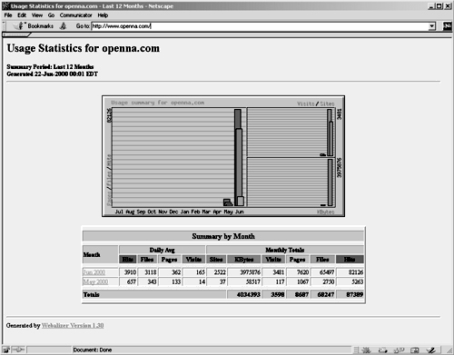

| Securing and Optimizing Linux: RedHat Edition -A Hands on Guide | ||
|---|---|---|
| Prev | Chapter 30. Optional component to install with Apache | Next |
Once Webalizer has been installed in the system we must add the following lines into the httpd.conf file of Apache to be able to locate and use it features.
Edit the httpd.conf file, vi /etc/httpd/conf/httpd.conf and add the following lines between the section tags <IfModule mod_alias.c> and </IfModule>:
Alias /usage/ "/home/httpd/usage/"
<Directory "/home/httpd/usage">
Options None
AllowOverride None
Order deny,allow
Deny from all
Allow from 192.168.1.0/24
</Directory>
|
Don't forget to restart your Apache web server once you have added the above lines to its httpd.conf file:
[root@deep ] /# /etc/rc.d/init.d/httpd restart
|
Shutting down http: [ OK ]
Starting httpd: [ OK ]
|
Now it's time to run the program to generate reports, html and graphics in the default Webalizer directory so that we can see them in our web browser interface. This step is required just the first time you install and use Webalizer, since it's preferable to use a cron job to automate this task in the future. To run Webalizer manually, to generate reports, use the following command:
[root@deep ] /# /usr/bin/webalizer
|
Webalizer V1.30-04 (Linux 2.2.14) English
Using logfile /var/log/httpd/access_log
Creating output in /home/httpd/usage
Hostname for reports is 'deep.openna.com'
History file not found...
Previous run data not found...
Saving current run data... [03/06/2000 04:42:03]
Generating report for March 2000
Generating summary report
Saving history information...
81 records (2 ignored) in 0.31 seconds
|
At this stage, we should verify that Webalizer is working on the system. To do that, point your web browser to the following address: http://my-web-server/usage/. The my-web-server is the address where your Apache web server lives, and usage is the directory that host all the Webalizer reports files.
